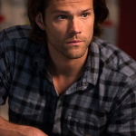
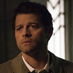
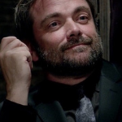
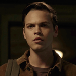
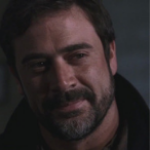
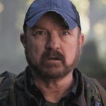
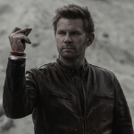
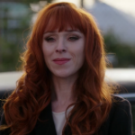

| Personaje |
Actor |
Biografia |
 Dean Winchester Dean Winchester |
Jensen Ackles |
Jensen Ross Ackles (Dallas, Texas; 1 de marzo de 1978) es un actor y director estadounidense. Criado en
Richardson (Texas), comenzó a tomar clases de actuación durante la secundaria inspirado por su padre, y
al cumplir los 18, se mudó a la ciudad de Los Ángeles para buscar contratos en distintos canales. En
1998, ganó reconocimiento en la televisión estadounidense al aparecer en Days of Our Lives, y su trabajo
le valió tres nominaciones consecutivas a los Premios Daytime Emmy entre 1998 y el 2000. En el 2004, se
unió al elenco principal de Smallville como Jason Teague, y su actuación despertó el interés de los
ejecutivos de The CW, quienes le ofrecieron protagonizar Supernatural, que comenzó a ser emitida en
septiembre de 2005. Desde 2010, está casado con la actriz Danneel Harris, con quien tiene tres hijos.
|
|  Sam Winchester |
Jared Padalecki |
Jared Tristan Padalecki (San Antonio, 19 de julio de 1982) es un actor estadounidense. Comenzó a tener
interés en la actuación a los 12 años y tras graduarse de la secundaria, se mudó a Los Ángeles
(California) en busca de oportunidades y saltó a la fama en el año 2000 con su papel en la serie Gilmore
Girls, para la cual grabó 63 episodios. También apareció en películas como New York Minute (2004), El
vuelo del Fénix (2004) y La casa de cera (2005). En 2005, fue seleccionado para interpretar a Sam
Winchester en la serie Supernatural. Tras la culminación de Supernatural, protagonizó la serie Walker
con el personaje titular. Por otra parte, Padalecki ha apoyado a varias asociaciones benéficas en favor
de la salud mental. Desde 2010, está casado con la actriz Genevieve Cortese, con quien tiene tres
hijos. |
|  Castiel |
Misha Collins |
Dmitri «Misha» Collins (nacido Dmitri Tippens Krushnic; Boston, Massachusetts; 20 de agosto de 1974) es
un actor, director y productor estadounidense. Es mayormente reconocido por interpretar a Castiel en la
serie de televisión Supernatural. Además de Supernatural, Collins es reconocido por sus roles
recurrentes en otras series como 24 y ER. |
| Crowley |
Mark Sheppard |
Mark Andreas Sheppard (Londres, Inglaterra; 30 de mayo de 1964) es un actor y músico británico. Es hijo
del también actor William Morgan Sheppard. |
| Jack Kline |
Alexander Calvert |
Alexander Calvert (Canadá; 15 de julio de 1990) es un actor canadiense. Es conocido por interpretar a
Jack, en Supernatural y a Lonnie Machin/Anarquía en Arrow. Calvert debutó en 2005 en un episodio de La
zona muerta. Ha aparecido como estrella invitada en diversas series de televisión tales como: Psych, The
Troop, Human Target, Bates Motel, Motive y The Returned. Así mismo, ha tenido participaciones en
películas como To Be Fat Like Me, Devil's Diary, If I Had Wings, Lost After Dark y Blackburn. El 17 de
julio de 2015 se dio a conocer que Calvert fue elegido para dar vida a Lonnie Machin/Anarquía en Arrow.
También ha sido elegido, en este 2017, como habitual protagonista para la temporada 13 de otra serie de
CW: Sobrenatural, interpretando a Jack, hijo de Lucifer. |
| John Winchester |
Jeffrey Dean Morgan |
Jeffrey Dean Morgan (Seattle, Washington; 22 de abril de 1966) es un actor estadounidense, más conocido
por interpretar a Negan en la serie The Walking Dead, a El Comediante en la película Watchmen (2009), a
Denny Duquette en Grey's Anatomy, a John Winchester en Supernatural, a Thomas Wayne en Batman v
Superman: Dawn of Justice y por su más reciente papel como el agente Russel en la película Rampage. |
| Bobby Singer |
Jim Beaver |
James Norman Beaver Jr. (Laramie, Wyoming, 12 de agosto de 1950) es un actor, dramaturgo, guionista e
historiador de cine estadounidense. Es más conocido por su papel como Bobby Singer en la longeva serie
Supernatural. También interpretó a Whitney Ellsworth en la serie de HBO Deadwood, la cual le valió una
nominación en los Premios del Sindicato de Actores por mejor reparto de serie dramática, y al Sheriff
Shelby Parlow en la serie de FX, Justified. Su memoria Life's That Way fue publicada en abril de 2009.
|
 Chuck - Dios Chuck - Dios |
Rob Benedict |
Robert «Rob» Patrick Benedict (Columbia, Estados Unidos; 21 de septiembre de 1970) es un actor, actor de
voz y cantante estadounidense. Es mayormente reconocido por su trabajo en distintas series y filmes de
comedia como Felicity, Head Case y Not Another Teen Movie (2001), además de sus constantes apariciones
en Supernatural. Asimismo, Benedict es el vocalista y guitarrista principal de la banda de indie rock,
Louden Swain, la cual fundó en 1995 en Chicago y con la que ha publicado seis álbumes de estudio, un
extended play y un sencillo. |
| Lucifer |
Mark Pellegrino |
Mark Ross Pellegrino (Los Ángeles, California, 9 de abril de 1965) es un actor estadounidense de cine y
televisión. Es principalmente conocido por sus papeles como Paul Bennett en Dexter, Jacob en Perdidos,
Lucifer en Sobrenatural y Bishop en Casi Humanos. |
| Rowena |
Ruth Connell |
Ruth Connell (born 20 April 1979) is a Scottish theatre, television and film actress and producer. She
is also a former professional dancer and choreographer. Connell is known for her recurring role as
Rowena in the CW series Supernatural. She was nominated as "Best Leading Actress" in the 2013 Broadway
World Los Angeles Awards for her portrayal of Mrs Darling and Captain Hook at the Blank Theatre, Los
Angeles in their award-winning production of Peter Pan: The Boy Who Hated Mothers. |